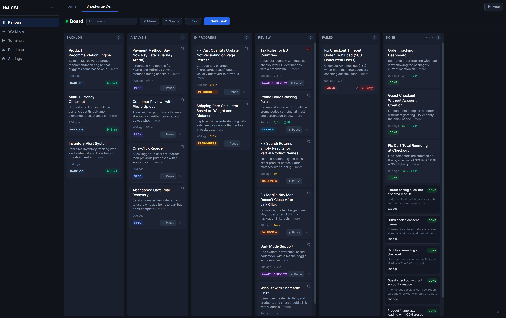
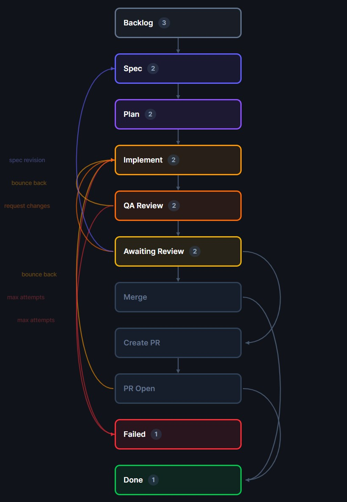
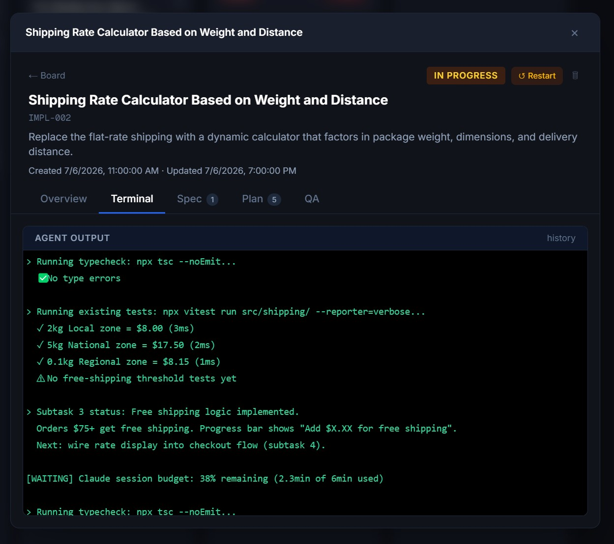
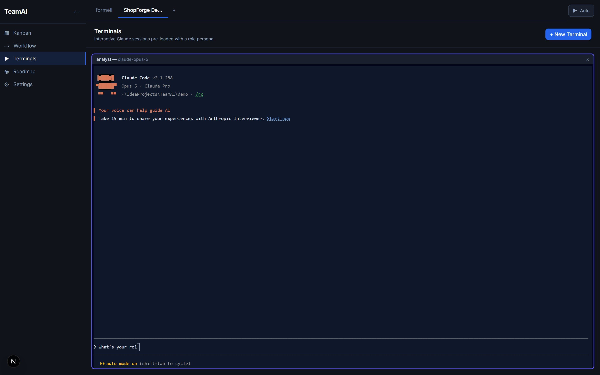
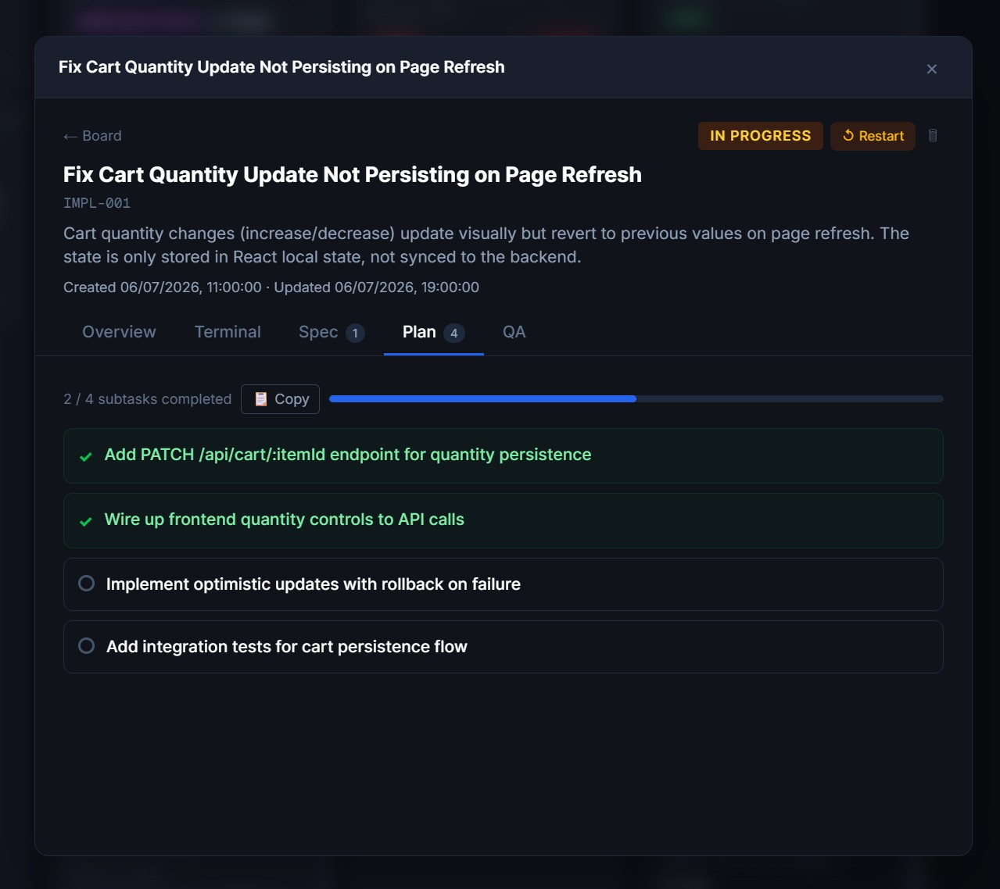
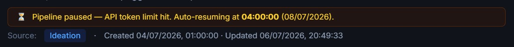
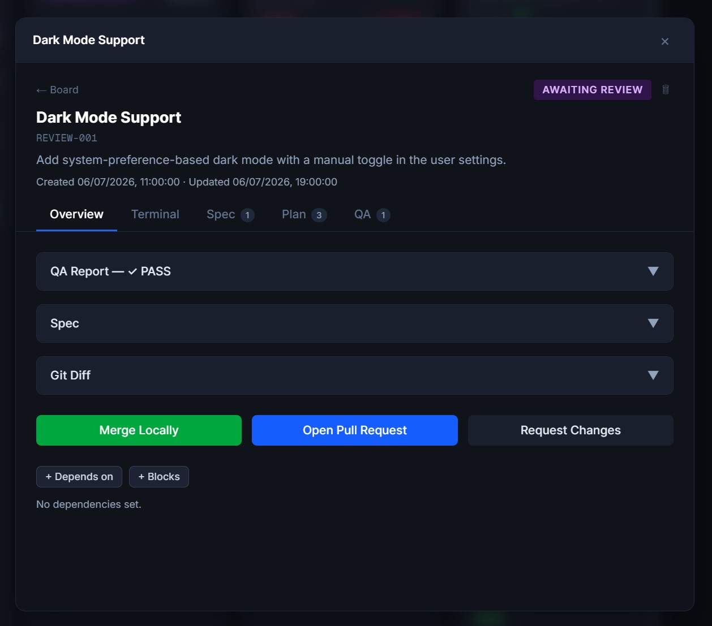
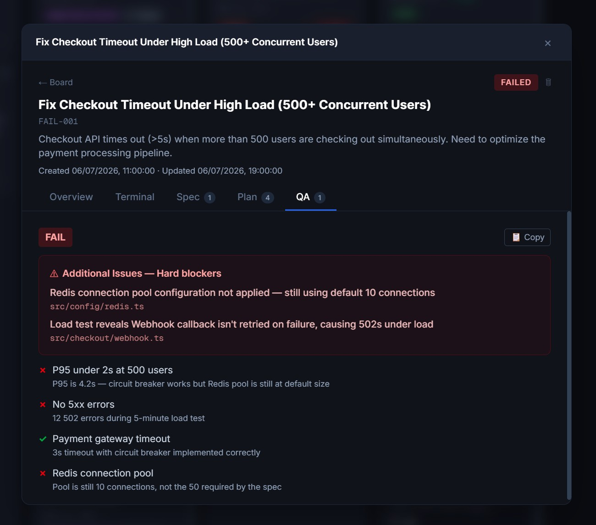
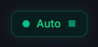
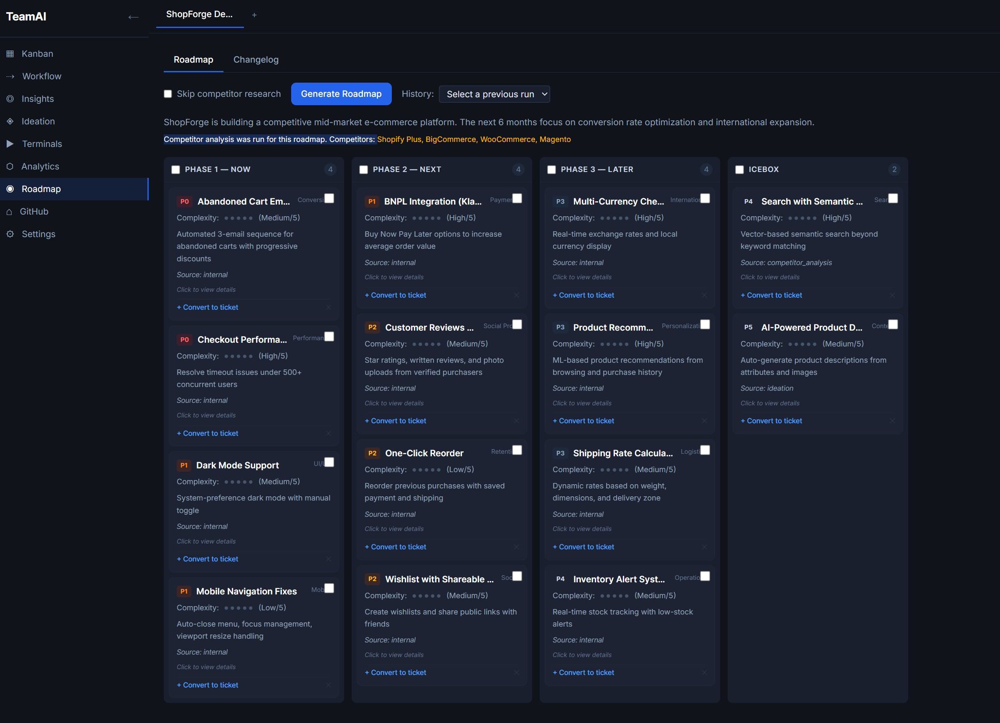

Picks up right where it left off
If a task hits a rate limit or the app restarts, TeamAI detects the interrupted task and resumes it automatically at the same phase and subtask, with zero lost work.
TeamAI puts a full development team at your fingertips. An analyst, a planner, a coder, and a QA reviewer work together, turning feature requests into shipped code.
Agents run as terminal processes on your computer with full filesystem access, and can use any command line tool you use.
Each agent can work inside its own Docker container, keeping your environment clean and safe.
Multiple agents run simultaneously in isolated workspaces without stepping on each other.
Watch each agent think, plan, and code in real time as their terminal output streams directly to the app.
Assign models and define custom roles for each agent. Tailor how they think, write, and review to match your team's standards.
Manage several codebases from a single window. Each project keeps its own settings, agent roles, and task board.
Tasks are organized into columns by stage. Drag and drop to move them between stages, or let the pipeline advance them automatically. Click any task to see its full details, specification, plan, and review report.

Each task passes through a chain of specialized AI agents. Every agent picks up where the previous one left off and advances the work to the next stage.
When QA finds issues, the task loops back to the coder with detailed feedback.
When the coder finds a gap in the spec, the task loops back to the analyst for clarification.

Each agent's terminal output streams live to the app. Watch the analyst write the spec, the planner break it into subtasks, the coder implement each change, and QA validate the results. Every thought, file edit, and command run, visible as it happens.

Open a live terminal with any of your agents and step in whenever you like, with no task or pipeline required. Sessions keep running while you move around the app, so you can paste, scroll, and use full-screen tools just like a normal terminal. Any session can also file a new ticket for you, straight from the conversation.

The planner divides complex features into small, independent subtasks. Each subtask runs in its own git worktree so parallel agents never conflict.

If a task hits a rate limit or the app restarts, TeamAI detects the interrupted task and resumes it automatically at the same phase and subtask, with zero lost work.

When QA completes or a task fails, the pipeline pauses for your decision. The review panel shows the full quality report: what passed, what failed, and why. Choose whether to send it back for fixes, revise the specification, merge the changes, or open a pull request.
Clear pass and fail results for every acceptance criterion with detailed notes.
Revise the spec itself when the requirements need rethinking.
Merge locally, open a pull request, or request changes with a single click.

A failed task doesn't leave you guessing. The task overview shows exactly which criteria failed and what QA recommends doing about it, and any task that pauses for your attention says plainly what it's waiting for, both on the board and inside the task itself.

Not every failure is a hard task; sometimes an agent's role prompt is missing a project convention. TeamAI analyzes failed tasks, tells you whether a role prompt is the root cause, and proposes a fix that you approve.
One click on any failed task runs a dedicated analysis agent that reads the QA report, plan, and agent logs to classify the root cause: a role-prompt gap, a TeamAI contract gap, or just a genuinely hard task.
Role gaps come back as a before/after diff you can hand-edit. Apply, apply and retry, or dismiss: every change is backed up for one-click revert.
Auto mode watches for recurring failures and analyzes them within a daily budget. With a further opt-in, small high-confidence fixes can even be applied and retried automatically, with a safety guard that escalates back to you if a fix doesn't work.
Flip the switch and TeamAI takes over. It picks tasks from the backlog, respects task dependencies, runs them through the full pipeline, approves them at review time, opens pull requests, waits for CI to pass, and merges automatically.

Completed tickets don't disappear. TeamAI tracks the history of finished work by relying on GitHub: each ticket's implementation lands in your repository, so the record of what was built stays with your code. Look back on your project's history anytime, right where it lives.
TeamAI helps you think strategically about where your project is headed, not just what to build next.
Generate multi-phase roadmaps with competitors analysis. Group features into Now, Next, Later, and Icebox. You can then convert them into tasks with one click.
Let AI scan your codebase and surface opportunities you might have missed: performance improvements, tech debt cleanup, missing features, and architectural suggestions.

TeamAI is open source. Grab an installer for Windows, macOS, or Linux from GitHub Releases. The app keeps itself up to date automatically. Prefer running from source? Clone the repo and follow the README.